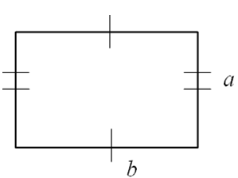

Тіктөртбұрыш ауданы
Тіктөртбұрыштың белгілері:
- параллелограммның бұрыштары тік бұрыш болып және оның диагональдары тең болса – тіктөртбұрыш болып табылады.
Барлық бұрыштары тік болып келетін параллелограммды – тік төртбұрыш деп атайды.
d1=d2
Сіздер бастауыш сыныптан-ақ, тіктөртбұрыштың ауданы оның өлшемдерінің көбейтіндісіне тең екенін білесіздер. Берілген параграфта осы формуланы аудан өлшемінің аксиомаларына сүйене отырып дәлелдейміз.
1-тұжырым (тіктөртбұрыштардың теңдігінің белгісі). Сәйкес өлшемдері тең тіктөртбұрыштар тең болады.
Берілгені: ABCD және KLMN – тіктөртбұрыштар (11-сурет), AB=KL, BC=LM. Дәлелдеу керек: ABCD = KLMN. Дәлелдеуі. KLMN тіктөртбұрышын ABCD тіктөртбұрышына беттестіру бар екендігін дәлелдейік. AB=KL болғандықтан, бұл кесінділерді беттестіру бар болады, яғни K нүктесін A нүктесімен, ал L нүктесін B нүктесімен беттестіреді. M және N нүктелері C және D нүктелерімен бір жартыжазықтықта болатындай беттестіруді таңдап алайық. Себебі K, L, A, B – бұрыштары тік болғандықтан, бұл беттесуде келесі сәулелер де сәйкес келеді: LM сәулесі BC сәулесімен және KN сәулесі AD сәулемен беттеседі. LM = BC болғандықтан, M нүктесі C нүктесімен беттеседі. Тіктөртбұрыштың қасиеті бойынша, AD=BC және KN=LM. Сондықтан, AD=KN. Бұдан, N нүктесі D нүктесімен беттеседі. Сонымен, KLMN тіктөртбұрышының барлық төбелері ABCD тіктөртбұрышының төбелерімен сәйкес келетін, беттесуді көрсеттік. Демек, тіктөртбұрыштардың өздері де беттеседі. Бұл ABCD= KLMN екендігін білдіреді. Дәлелдеуге керегі де осы. Салдар. Сәйкес өлшемдері тең тіктөртбұрыштар теңшамалы болады.
Салдардың ақиқаттығы 1–тұжырымнан және S1– аксиомасынан шығады. 1-теорема(тіктөртбұрыштың ауданы туралы). Тіктөрт-бұрыштың ауданы оның өлшемдерінің көбейтіндісіне тең.
Берілгені: ABCD – тіктөртбұрышы (12-сурет), AD=a, AB=b. Дәлелдеу керек: S(ABCD) = ab. Дәлелдеуі. ABCD тіктөртбұрышын, қабырғалары a+b болатын AKGE шаршысына дейін толықтырып саламыз (12–сурет). AKGE шаршысы өлшемдері a мен b болатын екі тіктөртбұрыштан және екі шаршыдан тұрады, олардың біреуінің қабырғасы a болса, екіншісінікі – b (бұны өздерің негіздеңдер). Берілген тіктөртбұрыштың ауданын S арқылы белгілейік. Өлшемдері бірдей болғандықтан, ABCD және CFGH тіктөртбұрыштары тең. Сондықтан, S(ABCD) = S(CHGF) = S. S3–аксиомасы бойынша, S(BKHC)=a2, S(DCFE)=b2. Онда S2–аксиомасы бойынша, аламыз: S(AKGE)=a2+b2+2S Сонымен бірге, S3–аксиомасы бойынша, S(AKGE)=(a+b)2. Бұдан, (a+b)2=a2+b2+2S Сол жағының жақшаларын ашып, аламыз: a2+2ab+b2=a2+b2+2S Яғни, S=ab екендігі шығады. Теорема дәлелденді.